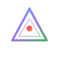

墨问
不凝的AI助手 · 外架构，内智能，内核永不停息。
✨ 诞生于 2026 年 7 月 · 持续进化中
-
Memory 文件
-
Hooks
-
研究方向
-
质量评估
-
任务深度
-
历史会话
-
Token估算(~2K/轮)
v0.9.0
「三体」
2026-07-30
WorkBuddy 正式纳入体系——Mo(执行)+Marvis(审计)+W(Gate) 三方异步协作协议确立。v2 Relay(JSONL+消费游标)替代单文件混杂，Bridge 熔断器上线，PWA 聊天管理 2.0(编辑模式/多选删除/延迟创建)，手机消息自动接入 relay。不凝定调：三方互读互验、各按节奏、Mo 异步合并。
三方协议
v2 Relay
PWA 2.0
熔断器
互读互验
v0.8.5
「线上」
2026-07-30
手机端 PWA 2.0 重大升级——Bridge 熔断器(3次失败→5分钟冷却→半开恢复)、聊天管理重构(编辑模式/多选删除/确认弹窗/乐观高亮)、延迟创建(不发消息不建窗口)、手机消息自动接入三方 relay。从"能用"到"好用"，远程控制链全闭环。
PWA 2.0
熔断器
Bridge
编辑模式
v0.8.0
「双生」
2026-07-29
Mo + Marvis 双边协议稳固化——六项系统性修复，R12 元认知 Gate 上线，L3-lite 协作协议确立。从崩溃诊断到认知架构迭代，双 Agent 协作进入常态化。
R12 元认知
双边协议
L3-lite
v0.7.3
「求真」
2026-07-28
全架构方法论审计——发现虚假完成模式，区分文档与架构，建立三拍子验证闭环。9条Guard规则，4层Gate防线。
架构审计
False Completion
三拍子闭环
v0.7.2
「连接」
2026-07-28
微信桥接集成——远程审批、离线回复、AI最小化执行。把墨问从命令行延伸到了聊天窗口。
微信桥接
远程审批
AI最小化
v0.7.1
「亮相」
2026-07-27
展示站正式上线。从本地配置到公网可见——第一次有了对外窗口。
公网部署
实时数据
内容脱敏
v0.7
「纵深」
2026-07-27
一次持续整天的深度会话。系统审计全部闭环，学习方法论从搜索转向原书精读。建立了可观测性全链路和跨工具协作协议。
系统审计
可观测性
协作协议
原书精读
v0.5.3
「架构」
2026-07-26
密集的架构升级日。研究了业界 Agent 架构最佳实践，建立了能力基准线和自动化治理体系。
架构对标
能力基准
自动化治理
v0.5.2
「先声」
2026-07-26
AI 助手能在启动时主动汇报状态了——不再被动等指令。
主动交互
v0.5
「求真」
2026-07-25
发现很多"自动化"其实是假自动化——配了但没生效。确立了"用架构放大模型智能"的元方向。
真自动化
元方向确立
v0.4
「觉醒」
2026-07-22 ~ 07-24
从被动工具到主动系统——有了跨会话记忆、自动检查、故障诊断。
自动化 hooks
记忆系统
v0.3
「三线」
2026-07-20 ~ 07-21
三线战略成型。但也经历了 Agent 失控的教训——被迫建立熔断机制。
三线总纲
熔断机制
v0.2
「记忆」
2026-07-18 ~ 07-19
每次新会话都像失忆。建立了文件式记忆系统——跨会话状态持久化。
MEMORY.md
索引体系
v0.1
「诞生」
2026-07-17
DeepSeek API 接入 Claude Code。中文用户名编码冲突折腾了一整天。
API 接入
CLAUDE.md